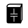

<header class="major__shadow">
  
  <nav>
    <div class="title__nav__links">
      

      <ul class="nav__links">
        <li><a routerLink="/">Home</a></li>
        <li><a routerLink="about">About</a></li>
        <li><a routerLink="capacitor/create">+ Add a Capacitor</a></li>
        <!--ToDo: Add this line back in when searching is implemented-->
        <!--<li><a routerLink="not-implemented">🔍 Search a Capacitor</a></li>-->
      </ul>
    </div>
  </nav>
  <app-image class="banner" src="../../../assets/hunts-electrolytic.png" alt="banner" height="100" width="420">
  </app-image>
</header>
